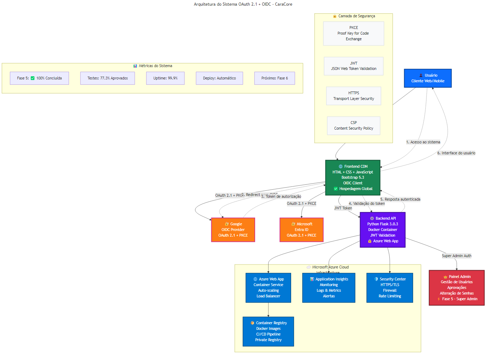

Visão Geral
Bem-vindo à documentação técnica do Sistema de Autenticação e Autorização CaraCore. Este projeto implementa um fluxo de login seguro e moderno utilizando OAuth 2.1 e OpenID Connect (OIDC), com foco em segurança, performance e escalabilidade.
Fase 5 Concluída! O sistema agora inclui um painel administrativo completo para gestão de usuários, aprovações e senhas, com uma arquitetura de frontend totalmente reorganizada e centralizada.
O sistema foi validado por um conjunto de 22 testes automatizados, atingindo uma taxa de sucesso de 77.3%, o que garante a funcionalidade das principais features em produção.
Arquitetura
A arquitetura é dividida em dois componentes principais:
- Frontend: Uma aplicação estática (HTML, CSS, JS) hospedada no GitHub Pages, responsável pela interface do usuário e interação com os provedores OIDC.
- Backend: Uma API em Python (Flask) rodando em um container Docker no Azure Web App, responsável pela validação de tokens, lógica de negócio e, agora, pela gestão administrativa.

Novidade Fase 5: A arquitetura agora inclui endpoints administrativos (`/api/admin/*`) protegidos por um token de super admin, garantindo que apenas usuários autorizados possam gerenciar o sistema.
Segurança
A segurança é o pilar deste projeto. As seguintes medidas foram implementadas:
- PKCE (Proof Key for Code Exchange): Previne ataques de interceptação de código de autorização.
- Validação de Token JWT: O backend valida a assinatura, expiração e emissor de cada token.
- HTTPS Obrigatório: Todo o tráfego é criptografado.
- Content Security Policy (CSP): Implementado para mitigar ataques XSS.
- Autenticação de Super Admin: Acesso aos painéis administrativos protegido por credenciais separadas e hash de senha seguro (bcrypt).
- Rate Limiting: Proteção contra ataques de força bruta nos endpoints de autenticação.
Próximos Passos (Fase 6): Os testes automatizados apontaram a necessidade de fortalecer o sistema de autorização e a proteção de endpoints, que serão o foco da próxima fase de desenvolvimento.
Stack Técnico
Backend
- Python 3.10
- Flask 3.0.3
- Gunicorn
- Authlib
- PyJWT
- Bcrypt
Frontend
- HTML5 / CSS3
- JavaScript (ES6+)
- Bootstrap 5.3
- Bootstrap Icons
Infraestrutura
- Azure Web App
- Azure Container Registry
- Docker
- GitHub Pages
Testes
- Python (requests)
- JSON Reports
Fases do Projeto
Implementação do fluxo OAuth 2.1 + OIDC com Google e Microsoft, validação de token, deploy em Azure e criação da interface de usuário.
Criação do login de super admin, painel de gestão de usuários, painel de aprovação de solicitações e funcionalidade de alteração de senha. Incluiu uma reorganização completa da arquitetura de CSS e JavaScript para um modelo centralizado e modular.
Foco em resolver os 5 testes que falharam, implementando um sistema de autorização robusto, fortalecendo a proteção de endpoints e calibrando a validação de credenciais. A meta é atingir mais de 90% de aprovação nos testes automatizados.
Métricas Atuais
77.3%
Taxa de Sucesso nos Testes
22
Total de Testes Automatizados
Deploy
O deploy é realizado em duas partes:
- Frontend: O deploy é automático via GitHub Actions para o GitHub Pages a cada push na branch `main`.
- Backend: A imagem Docker é construída e enviada para o Azure Container Registry. A Azure Web App é atualizada para usar a nova imagem. O processo é documentado em docs/DEPLOY.md.